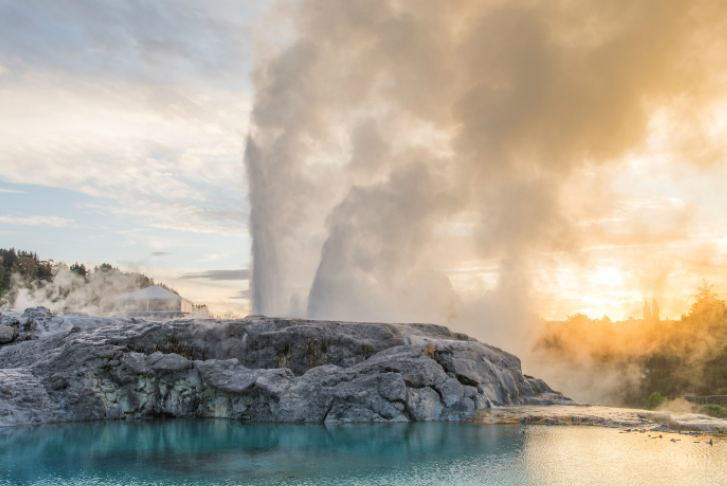

▶ 추천 장소
| 바다를 바라보고 있는 카이코우라 산맥(Kaikoura Range)과 태평양 사이에 멋진 마을, 카이코우라가 자리잡고 있습니다. 겨울이면 눈 덮인 산들이 극적인 아름다움을 더해줍니다. 카이코우라는 해양 포유류를 볼 수 있는 장소로도 유명합니다. 고래, 물개와 돌고래가 해변에서 헤엄을 칠 때, 매일 마을에서 여러 차례 출발하는 고래 관광이나 물개 카약 여행을 이용하면 말 그대로 이 동물들을 바로 눈앞에서 구경할 수 있습니다. 카이코우라는 또한 가재 요리를 즐기기에도 좋습니다. 가재 요리를 맛보기에 가장 좋은 방법은 해안 도로를 따라 늘어선 작은 캐빈에서 즐기는 것입니다. 운이 좋으면 바위 위에서 놀고 있는 물개들의 재롱을 즐길 수 있습니다. | |
| 프란츠 조셉과 폭스 빙하(Franz Joseph and Fox Glaciers) 이 세상에서 뉴질랜드 서해안처럼 빙하에 쉽게 접근할 수 있는 곳이 또 없을 것입니다. 프란즈 조셉과 폭스 빙하의 마을들은 이러한 빙하 시대의 멋진 유산을 관광하기에 이상적인 기지 역할을 해 줍니다. 여러 가이드 빙하 투어를 즐길 수 있고 마을의 헬리콥터 관광 회사들을 이용하여 빙하와 주변 산맥 위의 멋진 풍경 위로 비행을 할 수 있습니다. | |
|  | 로토루아는 북섬에서 가장 관광객들이 많이 찾는 곳 중 하나로 그럴만한 곳입니다. 사람들은 이곳의 화끈한 진흙 풀장을 체험하고 유황 성분이 높은 공기를 호흡하고 간헐천과 김이 뿜어져 나오는 온천을 구경하기 위해 이곳에 옵니다. 로토루아는 또한 마오리 문화를 체험하기에도 좋은 곳입니다. 마오리 족이 신성하게 여기는 곳인 로토루아는 현재 인구의 1/3이 마오리 족입니다. 테 푸이아(Te Puia)는 로토루아에서 가장 유명한 관광 명소로 마오리 문화 공연과 전통 항이(hangi: 지열을 이용한 음식) 를 지열 활동과 함께 즐길 수 있는 곳입니다. |